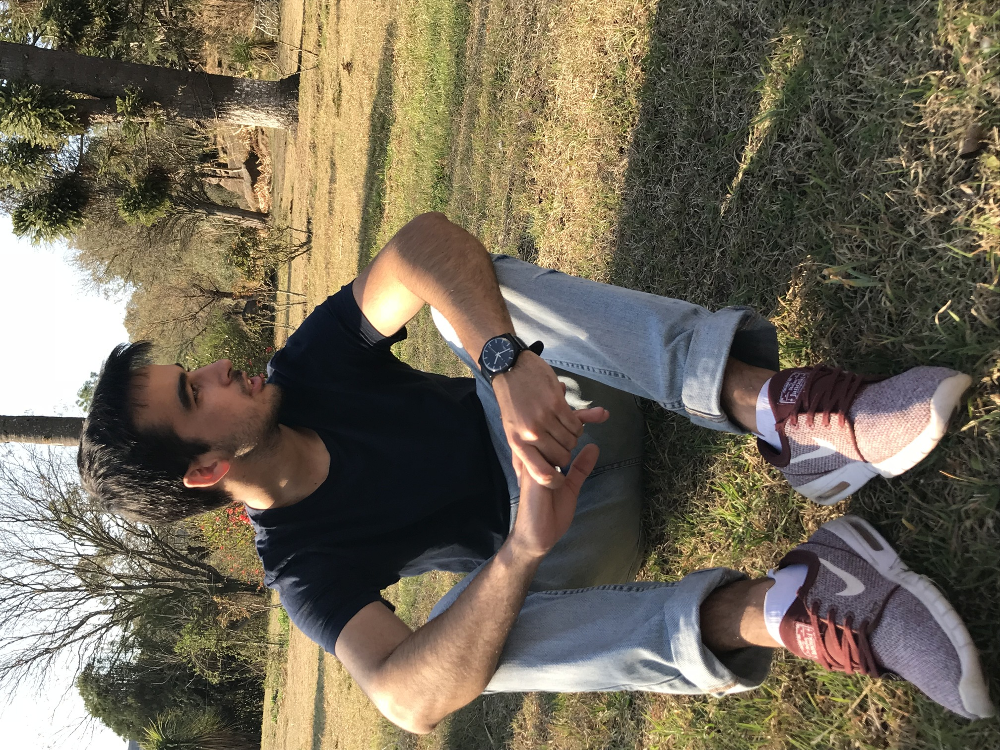

Nosotros
"La música es la mediadora entre el mundo espiritual y el de los sentidos." (Ludwig van Beethoven)
Si la vida fuese un cuadro, la música serían los colores. La música llena cualquier lugar, espacio, encuentro. Altro-Ke nace para eso: intentar acompañar y darle color a todo encuentro de personas; desde el más cotidiano al más importante.

Agustín Orias
Voz y teclado
Docente de primaria y secundaria
Hobby: Cantar y Tenis